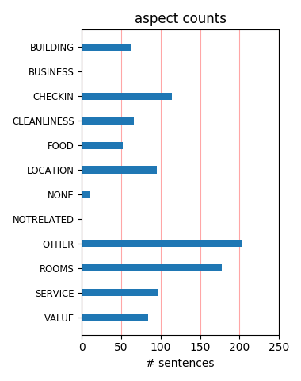
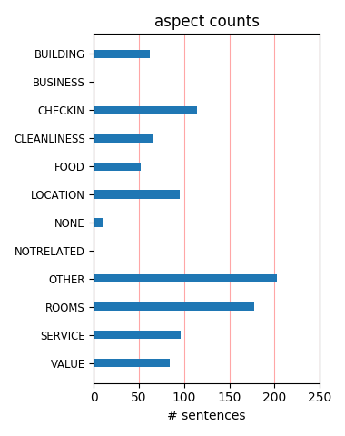

it's got it all...pool, shops, restaurant, coffee shop, quiet end of boardwalk location, great views from oceanfront rooms. Rooms on 11th Fl were clean and very comfy. Oh, they have a pool bar too. I will stay again.
I booked this for a "girl friends only getway" I asked for a room with a great view. The front desk staff assured me of a great view and she was right! wonderful view from the nice large CLEAN room. The staff was very nice and polite!
We spent the weekend at The Grand Hotel this past weekend and it couldn't have been better. Service was excellent, the room was very clean, the view was unbeatable, and the staff couldn't do enough for us. We will be staying there again soon.
This is a very clean family oriented hotel, with great services, and locations to everything. I highly recommend this hotel for your next stay weather it's with your family or just as a couple to get away to enjoy the spa, bar, or just to spend time on the beach...
Perfect location but rooms and amenities in general need some serious updates. Looks worn out and rusty. Beds are so cheap and the lowest quality, it's screaming for replacement. This could easily be a top notch hotel in Ocean City, if the interiors and facilities are upgraded to current or at least 4-star standards.
Our association has been using the Grand for the past 4 years and we have had nothing but the best service. The staff are very friendly and caring, especially Robin, Nina, Anna and Erin. They made a point of going out of their way to accomodate our every needs. If there were any concerns, the staff immediately took care of them.
Nina Railean was especially helpful at accomodating our needs, even when they seemed to be unpleasant in any circumstance. She went out of her way to ensure that we recieved quality assistance and accomodation in order to make our honeymoon an enjoyable one. We really appreciated her efforts and hope to return in the future. Thank you, Nina!
Actually I'm here right now and all I can say is do not come here memorial weekend it's gang weekend and not a place for young kids we haven't sleep in two days cause they take over the whole hotel wit there loud music and there loins bikes and I guess the managment doesn't care cause they rent out like 50 rooms first time here n probably last such a shame'!!!!
My husband and I stayed the Memorial Day Weekend and it was very pleasant. We had a wonderful view of the ocean. The room was clean and our maid service was very good. It was nice being right there on the boardwalk, didn't need your car to get anywhere. The room was very large and the bed was comfortable. The staff was very helpful and I would recommend this hotel to anyone
Once again another fab weekend here !! The storm came through and was wonderful to see from the amazing view point of the 8th floor. And the next day glorious sunshine, blue skys and sea !! Just breath taking. Service was impeccable as always !! The kids had such fun at the pool !! And they were tuckered out after so weactually got some rest ;) Thanks to the Grand Family !!
For the 5th year in a row we have stayed at the Stowaway Grand Hotel. It is a great place to stay. The design of the hotel is such that almost every room has a wonderful ocean view. The only down sides are that it is very pricey and the cleaning service could do a little better job. Here's a tip..instead of getting reservations - just show up. We did and saved $100.00 per night!
I wouldn't stay anywhere else on the boardwalk. The rooms are nice along with the helpful and friendly staff. My family each year just love love love staying at the Grand Hotel from the food to the cheapest shopping in their lovely shops. I would suggest this hotel to anyone that goes to Ocean City. This is one of the most clean hotels that I have stayed at thus far in Ocean City.
Just wanted to say Thank you to The Grand and Christina at the front desk. We booked at another hotel and it was awful but when we went to the Grand we were able to save our week vacation. Christina at the front desk was so helpful and friendly. We will definitely be back. The room was nice, clean and spacious. The view was beautiful it was great to see the bay and the ocean. Thanks again.
This hotel has a great location and the way its shaped we got a room with views of both ocean and bayside. There is a cute tiki bar at the pool, but they don't offer pool side service which would make it better. They have alot of amenties in this hotel including a pizza place which is open until midnight and a 24hr cafe. We would def recommend this hotel to others and would come back again!
This place was great! My husband and I stayed here at the end of September on a mid-week madness special. It was worth the drive! Our room had a great view, we got a dinner coupon worth $60. The coffee shop was open all night, which was perfect for us night owls. The girls at the front desk were so much fun. They let us know about all the spots locals go to have fun. We can not wait to come back!!!!
I stayed at the Hotel on fourth of July even though it was full house they manage to keep it clean planty of parking friendly staff, conveniently lacated, with sliding doors closed you don't hear a thing of whats going on outside. This was my first time at hotel and I'll be back, more than I can say about other hotels in Ocean City.I stayed there once i don't come back many hotels in Ocean City have rude employees,
My family of 4 stayed at grand at was disappointed with the service of employees. Compared to previous years of staying at the hotel the staff does not speak english nor understand very well. Lazy staff and incompetent. This is my last stay here at the grand I will go to another hotel. I would pass on this hotel if you are thinking about staying here because other hotels offer better amenties than this one for the price
Just returned fromOcean City Maryland.We stayed at the Grand Hotel and Spa on 21st.Very clean and well kept.The rooms overlooking the ocean are breathtaking.Their balconies are very large.Location is great and staff is friendly.The pool area is wonderful u are treated to a towel and pillow on your lounge chair and the bar is an added touch.Cant say enough good things about this Hotel.Would definately return there again!!
We stayed at this hotel for the Sand Duels soccer tournament with the U-11 and U-9 girls teams. We typically stay at the Hilton in OC but The Grand Hotel is a better deal. The only downside is that they don't have room service, but the deliver services in OC are great, and you are right on the boardwalk so finding a decent place to eat is EASY. The rooms are clean and spacious, and all have great views. Definitely returning.
Loved the hotel, my husband and I took my little cousin and her friend june 11-15, it was senior week so at night it was VERY loud. That was no problem! The view was amazing from the 10th floor. Everyone there was super nice everything was clean and well taken care of. I am nothing bad to say about this hotel it was the best hotel we have stayed in so far in OCMD. Thanks everyone at the grand hotel for making our stay wonderful:-)
I have stayed at The Grand Hotel several times. I love staying here because of the day spa conveniently located in the lobby. Each visit I stayed in the king/jacuzzi tub room - oceanfront, of course. I love going downstairs and getting a massage by Karen. She is GREAT! She remembers me each visit and welcomes me with a warm smile. I have been all over town getting massages and she is the BEST! I highly recommend a stay here and a visit to the salon/day spa!
My husband and I just returned from a short jaunt to OC We stayed at the Grand Hotel and Spa. We had a marvelous time! The hotel is located on the boardwalk and has everything you'll need for your stay. We enjoyed the whirlpool tub in our room and the small kitchenette. We had a great view of the Atlantic Ocean and the beach. There is an indoor and outdoor pool, bars, and a spa. The beach was very clean, unlike many years ago. I would definitely recommend this hotel!
Overpriced, cheap furniture, bad flooring(carpet lifting) wallpaper peeling, tight bathroom, water malfunction in the tub took forever to go down, pregnant back tv, really, my child couldn't hook his game up, no wi fi for our stay there, according to them bad weather, hmmm, is we not in the same place, hmmm, yu'll pull a muscle trying to open the balcony door, plastic ran down chairs on the balcony, and the curtains were dirty.....and fo the $$$$'s we paid. What a Lovely stay #bookelsewhere
I really loved "The Grand"! My boyfriend and I got the Weekend Escape Package and had a wonderful time. We didn't like the location of the room because it was on the outter side of the building so we asked from another room with a better view. Kyle had no problem accommodating us within our package's terms. The room was clean, beds were very comfortable and the price was well worth it. Arlene was also very helpful. The bartender was very sweet and personable. I would recommend this hotel to anyone!
Fourth of July week we stayed at the grand for 7 nights. It was very nicely located with a 24 hours cafe downstairs, 2 pools , 2 bars and some beach stores to shop in. The beach was just a few steps away and very clean. The beds were comfortable, housekeeping was very welcoming and helpful, and the room was very clean. the only thing I wish I had for paying such good money would be a newer television and free hott breakfast of some kind. Overall the stay was great and staff was friendly. See you next year !
Very nice hotel and friendly people. Nice and clean rooms. The bathrooms however, are SO tiny it is very hard to get around in them. The one thing I very much dislike are the balconies. There is absolutely no privacy on them. They have bars up that separates them and they do that so you get the most out of your view but like i said, there is just no privacy. I don't want to go out and sit there with my neighbors looking right at me!! That is my one major complaint about this hotel. Everything else was very nice.
The Grand Hotel has always been my favorite hotel in Ocean City. It's right on the boardwalk and near everything. I went in November alone and still had a great time. (Me Time). The spa is right in the hotel and the massage I had was just what the doctor order. You really didn't have to venture out if you didn't want to. Everything you need is in the hotel. (Spa. restaurant, lounge, indoor pool & game room along with an excerise room.) You even can do minor shopping without going outside. The rooms and views are great!
Just got back from oc. I really liked this hotel the rooms and hotel were very clean and the staff very friendly and nice. We had a room on the side and still had a great view of the ocean. I also liked the 24 hour coffee shop. What i did not like is that you could not bring your own drinks and snacks to the pool they did have a bar at the pool which was way overpriced after all you are on vacation you should be able to relax and enjoy yourself at the pool. the only other thing i wish they had was a hot tub that would be perfect
Me and my wife were checked in on sat of Sep 24 2011.As Soon as I try to check in, they didnt even had my reservation untill I show my paper comfirmation. Front desk guest service were horrible, well They don’t even say word “sorry”! it’s not that hard to say it word sorry Also, AC sound like having a big problem~ B/c I thought it was airplane engine was turned on, I could't even sleep well...personally, it was my first time staying in OC with Grand hotel, but it will be my last time...BTW... I will say one good thing is Ocean View...
Just got home from staying at the Grand Hotel in O.C. and can't wait to go back! The staff from front desk to maids to pool attendants to GM-Patrick were awesome. The rooms are very spacious and the kitchenette was perfect. The view from the room was beautiful even though we didn't have a "direct view" room. We lost our car keys on the second day there and General Manager Patrick went above and beyond to get us a replacement key from a dealership 30 minutes away. I highly recommend staying here and if I could I would give them 6 stars!
I Understand that fire alarms are there to protect us but we have stayed here for the past six or seven years and have been evacuated every year. Some years more than once. For me its an inconvience and annoying. For my kids its scarey. My seven year old is scared to go back. Last year he couldnt sleep and grinded his teeth all night long. The fire alarm went off of course and then the rest of our vacation he wanted to go home! It was a nightmare. Its a shame because we like everything else about this hotel. Nice hotel with a major fire alarm problem!
What a true disappointment!!! Our kids could not check in the hotel without a parent's signature on a paper stating we would take responsibility. My child was over the age of 18 (isn't that still considered an adult???). During check-in several seniors had to wait for their parents to fax or email this paper. Of course, the hotel was happy to take our child's money before this paper was received. When speaking to the manager, he acted as if he didn't care and basically stated we could find somewhere else. Not very good customer service. Good luck Seniors!!!
Stayed here while attending an event at the convention center. The Grand Hotel is located nicely and my room (1105) had a wonderful southern view of the boardwalk and beach. The large room with two queen beds was comfortable and quiet. The refrigerator was convenient, and the hotel staff are very responsive. I booked anextra room for my hospitality suite one night and the staff cleared out the beds and replaced the beds with rounds and chairs for my guests. Even the California Cheesteak in the pizzaria on the gound floor was of special quality. I will certainly return!
I am pleased to say that my wife and I had a really great experience at the Grand Hotel. Nice oceanfront room with a gigantic balcony. Action packed hotel/area with great choices of food, beverage and of course the Atlantic Ocean just 20 steps from the back door. Mr. Staib, the general manager runs a clean cut operation. Staff were friendly and accommodations were clean and comfortable. Being a GM of a hotel, I can appreciate being a guest especially in an environment such as the Grand Hotel. Keep up the great job and we will look forward to seeing you again next year!
Very clean and large rooms with awesome views from the balcony. Front desk staff was extremely helpfull and courteous. The hotel is a great location on boardwalk and only steps away from the ocean. Rooms were great with the kitchenette and queen size beds were very comfortable. This was our first stay at the Grand and will definately choose this location in the future. Pools were clean, restaurant was great and was nice having parking so convenient. We have stayed at other hotels on boardwalk but none compare to the quality,service,price and location of the Grand. AAA +++
This is an older hotel, however, it has undergone a renovation. I've stayed at this hotel three years in a row now, mostly because of the price. Nice hotels in Ocean City are just TOO EXPENSIVE! This hotel is somewhat over priced as well. But it is the nicest hotel in its price range in Ocean City. Everything about this hotel is average. In past years, it was not as clean as my stay this past summer. But is was very clean this summer. The rooms are okay. Almost all have ocean views. They are also a nice size. The balconies are very old. The internet service was SHOTTY at best.
Never in my life have I experienced such rude and ignorant service but any member in the hospitality industry - especially by the front desk Manager - Nina. The hotel booked my reservation for the wrong date, refused to give me a refund, and made my group pay full price for an extra night. The staff at this hotel cannot be trusted and are borderline scam artists. They are rude and do not understand any aspect of the hospitality industry. Also, if you are looking to stay at a hotel close to Seacrets - this is not it. I will never stay at this hotel again and I urge you to do the same.
We had a really nice time. Room was decent, check in was easy. They originally offered the 3rd floor, but when we requested a higher floor, they did their best to accomodate us and we got the 8th floor (which had a great view). We got there before check in and were able to park, use the pool and enjoy the day. Asked for extra pillows and got them right away. Location was perfect. Pizza place around the corner had a lot to be desired (would not recommend it). Loved Fish Tails, which was just a few blocks over. Beach was awesome. Saw tons of dolphins. Pool was nice too. Would definitely go back.
The rooms are really large and have small kitchenettes. Each room has a balcony. The only issue was that there were no solid dividers between balconies so you could hear and partially see the people next to you. There was a mesh screen of some sort between balconies. The place is very large and they have a restaurant that serves lunch and breakfast. We enjoyed sitting around the pool and having frozen drinks from the pool bar. It is quite a walk to the activities on the boardwalk but there is a tram that runs down the boardwalk. My daughter really enjoyed playing chess with the giant chess set.
If you are looking for a place to stay in OC that has your best interests at heart, don't stay at the Grand Hotel on 21 street. We stayed there for Memorial weekend and it was a disaster! A motorcycle association and church group were staying there at the same time. Don't mind bikers, don't mind churches, do mind loud music 24-7 and the all night party the hotel and city aloud in their garage parking, by-the-way, can't park out front of the hotel. Woudl NEVER recommend this hotel to anyone! Would only give a "below expectations" rating if there were one. I hope everyone reads my review before they book here!
The Grand doesn't live up to name . The hotel is a diamod location and the bones of the building are good but as a gem ...Its a pearl at best. The room had wall paper pealing apart ( rm 411), The funiture was very cheap and took away instantly from any wow factor that should be with this Grand building. No drink cups in bathroom, ceiling fan in bathroom not working. All and all the Grand was like a bad xmas package....Wrapped very nice on internet and to look at but not much inside ! Hint... Go to a Borgata.... Grand,,hint hint ...inside and out ! Oh and AC very noisy.in room. Disturbed sleep every time it came on.
My husband, granddaughter and I just spent a wonderful week at the Grand Hotel in Ocean City Maryland. We have been coming to Ocean City for the past 14 years for the Maryland State Fire Association Convention and I think this is the best place that we have stayed! Our room was very spacious and clean. The staff were very friendly and courteous. Our 6 year old granddaughter loved the indoor pool. We spent a lot of time at the outdoor pool which was very nice. Several of our friends who belong to our local fire department stayed at the Grand and they too were very satisfied. We will definitely be back again next year!
This is located on 21st street, a bit of a walk from boardwalk activities and restaurants. Stayed in room 1112 (11th floor center). Room average, you can get same room quality for less at other hotels. View was breath taking!!!! Outside pool located on parking lot side in order to get afternoon and sunset sun. Pool is kind of small. Pool bar is great and food is good. I rented the cabana by the pool one day and was worth it, however it was only set up for two people, so if you need more than that, you should go around 10am to check in with attendant to get more chairs. It was $50 for all day. You can leave and come back if you want.
I am surprised to see some of the bad reviews written on this page! My wife and I (and our neighbors... we talked to them in the elevator) had an excellent stay. We stayed on a busy weekend, when the hotel was booked to capacity with a bunch of screaming kids. I was concerned about getting sleep, but the hotel staff had it under control. They implemented a curfew for the kids and we slept peacefully. We had a nice ocean view at a reasonable price. We loved the 24 hour coffee shop and the lounge on the first floor! Even though we came in January, the staff knew what to do and where we should go. We enjoyed our stay and will definitely be back.
We recently stayed at the Grand Hotel & Spa in Ocean City, Maryland. The hotel is convieniently located on the boardwalk with many amenities within the hotel itself. We stayed in the King Jacuzzi Suite on the twelveth floor. We encountered a problem with our room on the first night but the manager Kara took care of our concerns and did everything possible to ensure a pleasant stay at the hotel. Overall, we had a very pleasant experience during our stay at the Grand. We reccommend this hotel without reservation. The only suggestion I would make to the hotel would be to add a love seat or sofa in the Jacuzzi Suite to watch television. Thumbs up!!!
Very nice place to stay. Great value with very clean and well kept rooms and facilities.Couldn't ask for much better at the beach. Coffee shop open 24hrs where you can get just about anything to eat such as bagels, donuts, pizza, ice cream, sandwiches, drinks,etc.Good accomodations in the room but could use one more lamp and a comfortable lounging chair. Had one problem with teenagers at 3:00AM which took Security too long to respond. Aside from that problem I would definitely stay there again. Very nice and on the beach. Good parking in front of building and with an undercover dropoff area. Parking garage only a short walk across street. Courteous workers.
I loved your hotel! We still talk about it. We have reccomended it to several friends. i have been going to OC for years and haven't stayed in a nicer room. We had an Oceanfront room and it was clean and the bed was comfortable. The room was not your usual beach hotel room, it was much fancier. We got a really good rate because of it being Thanksgiving week, and for $10 more we were able to upgrade. Location was awesome. Lobby was beautiful, with Christmas music playing and everyone was friendly including the front desk staff and the bartender. Would consider going back this Thanksgiving and staying with you again. Do you offer any packages for Thanksgiving?
Good staff, lots of amenities. B U T... Where there would normally be a sofa or an easy chair with a lamp, there was a great big space! I went to the desk to inquire about the policy of no comfortable chair. She said each room was the same. I found that hard to believe. I told her that I have been all over the world and have never seen a hotel room without some kind of chair to relax and read the paper. Next day, I peeked in some other rooms being cleaned. She was right. This may be a petty nit pick but I was very dissatisfied. These folks charge up to $329 per night for the room I was in. Disclaimer, I stayed off season rate of $100. My bottom line, never again
We came to Ocean City to celebrate our sons 4th birthday. We are true beach lovers and have stayed at many places in OC. Our main concern was clean, comfortable place to stay that is close to the beach. The hotel was very clean, beds were pretty comfortable, and the view was so so.The rooms are huge but bathrooms very small. We had a grandview room (sort of on the side) but it is not private from your neighbors at all. Probably the only complaint was the elavators. There were only 2 of the 4 working so it made for alot of rude behavior because everyone wanted to go and they werent willing to compromise. Typical! Overall a very nice trip. We would definitely return!
They advertise in-room WiFi but I could only use my laptop in the lobby. When I called the desk they said they would look into it. That was two days ago. Restaurants and lounge aren't open and there is NO satisfactory food on site. Spa was never open as advertised. I know it's off-season, but there are lots of people here. Staff also sneak into the closed jewelry store and out of the way hallways to smoke. Very unpleasant. The view is beautiful, but that's not worth the complete absence of amenities. House-keeping is the only group that was consistently competent and professional. Next time, I'm heading down the way to Marriott. My rate was very, very low...got what I paid for.
This was my husband's and I first time at the Grand celebrating our 1st year anniversary and we enjoyed every bit of it. We had a direct oceanfront view on the top and we couldn't have asked for anything more. Whenever we did have an issue, housekeeping and/or maintenance addressed our concerns immediately and efficiently. The service was great, hotel was clean and the employees were courtesy. We didn't eat at the hotel so I cannot comment on the food. The only thing that bothered me were the elevators. One was out of service one day and on another day it was slow. But honestly, it didn't bother us or interfere with our overall stay which is why I'm giving it a rating of 5 stars.
We visit Ocean City every Summer at least once, and have found the Stoaway Grand to be the best bang for the buck. Great location - on the boardwalk away from main traffic, but close enough for easy walk to amusement area. Always pretty clean and convenient inc. a 24 hour coffee shop downstairs. Although It is nice to see new top end hotels going in like the Hilton and Marriott - I just can't justify spending $ 429.00 and up to stay at one of them at Ocean City ! We payed $ 200 a night this week - it goes up a bit in July and August., but not much. Great parking too, a huge parking garage just steps away from front door, something many don't have. We will continue to go to the Grand every time !
Just got back from our Ocean Ciy vacation today. We stayed at the Grand this year. After having a less than grand time there in 2008 (anyone who has read my tirade after our July '08 vacation knows what I'm talking about) we took a break and stayed somewhere else last year. We came back to the Grand because the location is perfect. I must say that I am glad we did!!! Check in was a breeze, we got the floor we wanted, the view was FANTASTIC (we had more of an ocean view than we ever had before). How lovley to lay in bed and see the ocean!! The hotel was clean, staff was very friendly and helpful. There MUST have been a change of management. A change for the good!!! I will be happy to again recommend The Grand!!
My wife and I and two kids stayed at the Grand for a quick family weekend in OC. The views of the ocean, boardwalk and bay were great (by the shape of the hotel it seems that all of the rooms would have a nice view). I also like the location, it is on the boardwalk so you can get to the pier easily but not too close to the craziness. Our room was clean and very spacious (ours had a nice counter/sink with fridge/etc and a large balcony). The front desk person was friendly and the kids enjoyed the arcade/indoor pool. It was in April so the outdoor pool was closed but it seemed like it would be nice place to hang out, there was a nice poolside bar. The rate was compettiive, everyone liked it, we will definately stay there next time we are in OC.
This was a great hotel. Located on the boardwalk, oceanfront was wonderfull. Room was very clean. This is the second time we stayed this summer. Room was very large. Nice size balcony. Little kitchenette had plenty of cabinet space & countertop. Bathroom, beds & carpet was very clean. This end of the boardwalk was very quite & away from the crowd. You leave the hotel & walk across the boardwalk & right down to the beach. Very convenient. We plan to go back in September which will make it the third time this summer. So it must be a very nice place to stay because we would not keep coming back if it wasn't. The only thing that wasn't that great was the breakfast in the restaurant. Will eat somewhere else next time. The bar had great pina collattas.
Although I personally thought this was a nice hotel in a great location I can see how some people would be a bit dissapointed. We paid for an Oceanveiw room and were placed on the ground floor with a veiw of the roof. (Why dont they put a pool here?) We couldnt really see the ocean from our room but it was something we could deal with. Although the rooms seemed clean they were very dark and frankly depressing. When you go to a beach hotel, you want light and color! I liked the indoor and outdoor pool area and the pool bar. I would stay here agian if they lowered the rates. For what you get I dont think its worth the inflated prices they try to charge. If you are coming with family rent a condo at the Ocean hideaway or seagate instead and save $$$!!!!
Very nice hotel. Rooms are great layout and size wise. They were clean and comfortable with nice views and balcony. Swimming pools (indoor and outdoor) were nice and clean. Fitness center could use some updating but still was very usable. The bathroom was nice with decent space and had a decent layout. The hotel was clean inside and out, and even the parking garage. Always had plenty of parking for me and my friends' car. Perfect location on the boardwalk, you can walk right out onto it and walk all the way up and down. Will stay there again, I had no problems what so ever and I must say the A/C and Heat worked great! I had a mini fridge and microwave with a wet bar / sink. If they could improve it would be better tv's like plasma or lcd, but the size was good.
This hotel has seen better days. It sits on prime beachfront property, yet no money has been put back into the building itself. The rooms are large, very DARK, so dark it was hard to see to iron my clothing. Dark red carpet (stained), very dark furniture (from the 80's) and dark red and green comforters on the beds, makes it so gloomy! The price refects the shape of the property. There is a new Hilton right down the road that was 289.00 per night during this same week and the rate here was about 100 bucks, my vote, pay the extra for the name brand hotel. This property is in sad shape, I just went to the 6th floor to check out the "shipwreck" restaurant, it was closed, and through the door, I could see dirt on the floor and a broken glass window inside, yes, a shipwreck.
This hotel is great for someone who wants to be close to the action but not in the action . You can walk right to the beach and if it is raining there is the option of the indoor pool. The hotel has lots to offer such as a 24hr sweet eatery and there is a bar and spa. Where the hotel lacks is the actual room. The room is clean but not updated. So a little bit of a renovation is due. They room needs new curtains, carpet and the mattress was just ok...my husband did not get a good sleep but I slept ok. My 15yr old son snored loudly and slept as if he was home. The service was good. The front dest was friendly and helpful. It gets three stars for location if it was not for that it would have been two stars. More than likely this family would not return. We will ttry another hotel.
My boyfriend and I stayed at the Grand Hotel from Aug 28-Aug 30 for a quick getaway. The hotel is what is it. But is served its purpose for the 2 nights we were there. The positives: the location (walking distance from the Boardwalk and the beach), the hotel seems to have everything (clothing stores, salon, ice cream parlor, pizza place) on its premises. The negatives: not the cleanest, no wifi in the rooms (only available in the lobby--how ghetto is that!!), you can't connect DVD or video games console to the TV for the rare moment you want to stay in and watch movies, their restaurant only serves breakfast, the rooms have 2 queen sized HARD beds (king size is not an option). All in all, our stay was overall OK but could be better. We won't be staying here on our next OC excursion.
I want to start out by saying the housekeeping staff was very timely and efficient. The hotel is nice, and on the quieter end of the boardwalk, but needs to finish updating rooms. Especially needs knew sliding doors, (among other improvements) that are not fogged and you can open and close without a struggle. There is a lack of communication between employees at the hotel front desk, we received different check-in information from different employees, which was a little frustrating and confusing. Also, one of the front desk managers, Nina, needs to work on her people skills. A manager can be an efficient manager or be an efficient manager with interpersonal skills. As far as achieving those skills, that would depend on how much of a priority good customer service is to that manager and to the hotel.
I stayed at the Grand with my wife and two kids. Our room was extremely large and comfortable compared to most hotels in the area. We were able to thrown down a blow up mattress and still have plenty of room to move around. The ice machine was right outside my door and I never heard a peep late at night. The rooms seem to be very quite and soundproof compared to other hotels I have stayed in. We did not use the pools, but they seemed well maintained to me. The beach outside of the hotel is the best selling point - it's GRAND!!! When compared to staying in other locations in Ocean City, the beach at this location is very large and accommodates large crowds without making you feel like a sardine. The front desk staff was very friendly and helped with any issues and/or questions we had. Yes, I'll be back...
This hotel may have once been "grand" but the time has passed. The rooms are large but lacking in amenities. The mattress feels old and the pillows flat. Instead of sitting at the desk to work, I had to hover by the door to my room to connect to the Internet. The balconies do not have solid dividers so you are looking into your neighbor's space and the "furniture" on the balconies consists of cheap plastic chairs. The view of the ocean is beautiful but, unfortunately, I couldn't see it because there was condesation trapped inside the sliding door and blocking any view out. There was even an envelope requesting a tip for the maids! I'm not sure about the value for the money issue as I was not paying for the room but the hotel left much to be desired. I have to believe there are better places to stay in OC.
When my group arrived to start our golf vacation, we were thoroughly impressed. The rooms were beautiful, the staff was great, and the ammenities were spectacular. I booked this hotel since it was on the boardwalk. I never realized all that the Grand Hotel had to offer. We enjoyed the nightclub, which made it alot safer for us to enjoy a few cocktails after our rounds of golf. The 24 hour coffee shop was a delight all by itself. This is the place that we all would gather in the morning get a cup of coffee and then get on the road to our golf course destination. Iwould strongly recommend the Grand Hotel to everyone I know and any and all who ask me where to stay while in Ocean City. I am putting together another golf trip for my gang of misfits and the Grand Hotel is at the top of the list for accomodations.
We got an ocean view room with two double beds. It was one of the most SPACIOUS rooms we have gotten in an oceanfront hotel! You could easily fit a queen air mattress on the floor and have tons of space. There was also a kitchenette with a medium-sized fridge. Beds were comfortable, and on the main floor of the hotel were several shops and restaurants. Best of all, it was right on the beach and boardwalk! It is a bit away from the main attractions of the boardwalk, but there is a tram that comes every 15 mins for $3 a ride (exact change only). The outdoor pool was LOVELY, even though there were a LOT of small children. The staff sets up chairs for you, with towel service. There is also an indoor pool open till 11pm. They were also willing to give us as many parking passes as we needed. Great place to stay with friends!
Very bad experience! First off all for the amount of money you pay you get Zero customer service! The rooms are ok! Not that great. They charged us around $640.00 more than what we were suppose to pay just by "accident" thank God my husband noticed it and when we confronted the front desk not that she didnt apologize, she even gave us an attitute! It was so fraustrating! :( We went to let the manager "patrick" know and he took his employee's side and gave us a very cold apology that you could see he doesnt even mean it. He didn't even ask us if here is anything he could do for us or anyway we can leave with a good experience! Nothing!!!! Even when we asked for just a couple of hours of late check out he said no!!!! Never will book here again! They are so many nice hotels ocean front and so much cheaper! Do your research!!!!!
Wish we can find a Quiet boardwalk hotel w/the pool bar luxuries & an indoor pool for emergencies. Been here 4 times due to the price (7th, 2nd, 3rd, 6th floors, least expensive room). Had a good view on the 7th floor at the end, better than the 2nd floor w/the railing blocking the view for picture taking. A bit noisy outdoors & the A/C noise was inconsistent (only hummed when it needed to reach thermostat temp). Screen door needed oiling/unrusting. Staff was professional. Apologized when they were talking too loudly at the service elevator. Honored the "please clean" sign promptly. Bed & toiletries made beautifully. At the swimming pool, staff put on the lounge coverup & gave a strong towel. Nice to have a tropical drink on the lounge chair:) Boardwalk location had a bit of room so it wasn't exactly right next to the boardwalk.
Stayed here for a family beach weekend this summer. It will be our new home for trips to OCMD. The hotel is located on the boardwalk but, unlike other hotels closer to the attractions, it's not like playing a game of Frogger to cross to the beach. It was within easy walking distance to everything we needed - restaurants, snacks, miniature golf - and a very doable walk down to the end of the boardwalk. A bonus is that it's the only round hotel so it's easy to spot when walking the beach or boards. Our room was clean and spacious with a great ocean view. There's no privacy between balconies on the lower floors so sitting outside can be awkward. The upper floors appeared to have screens to remedy that. The 2nd floor rooftop pool was fantastic with a full bar and towel service. We were there several times each day for a dip. See you next summer, Grand Hotel!
We planned a quick vacation for 3 days, we came across The Grand Hotel thur ocean city's website.The rooms were very clean, they had everything that you needed in the room. the rooms were very nice. Every room in the hotel has a view of the boardwalk and the ocean. (side view or ocean front) There were 2 pool 1 outside and 1 inside. The outside pool was very nice it had a pool bar. they say that you could also order food there but the 2 diffrent days that we tried we were told that they were too busie to order (overpriced)food. The inside pool was nice but smelled too much like bleach. They have a breakfast buffet on the six floor, Pass it up the food is awful (my kids would not eat it the food was not hot, luke warm) also when you walked out side of the hotel (entrance from parking lot) the smell of trash was overwellming. They keep ther dumpsters inside two overhead doors.
My husband and I stayed at the Grand for our 30th anniversary last month and our experience could not have been better. For years, we have tried to include massages into our OC trips without success. When I saw the Romance Package (jacuzzi in the room, dinner voucher at choice of 4 restaurants and massages right in the hotel spa), we went for it. What a great deal!! Room was beautiful and squeaky clean. Staff was very courteous and helpful. They called our room approx. 2 hours after we checked in to ask if we had everything we needed. (That was a first for me!) The view from the room was stunning and you are right on the boardwalk. The spa staff was friendly & highly-skilled. The only negative for us was the fact that the restaurant is closed in the off-season. Overall, it was the weekend we have been trying to have for years. We have already booked our next trip for October.
Over the years, we have stayed at numeous hotels when visiting Ocean City. Once we discovered the Grand Hotel, we don't even consider another location. The staff are very accommodating, clean rooms are in good repair, wireless Internet access is available, small stores on the boardwalk side offer a cafe, pizza shop and various small shops. When we visit during "Cruise-In" weekends, you can get a coffee and donut from the cafe and sit on the boardwalk in front of the hotel to watch the cruiser parade. We love it! The Grand Hotel's location close to the end of the boardwalk is perfect for us to walk to most of our favorite destinations. A parking garage offers plenty of parking space. Our only bad experience during the most recent trip was with the Terrace Restaurant; I don't know if it is managed by the hotel or an outside group but I wouldn't recommend going to the restaurant for breakfast.
I've been reading a lot of reviews on this site, that said the Grand Hotel was horrible, and to steer clear of it, but I've been staying there for six years, and never once had a problem with it. The rooms are nice, the hotel seems clean and the staff is friendly. There are two pools, which is good since neither pool is ever too crowded. I will admit the rooms are a bit dark (nothing that can't be fixed with a flip of a few switches), and the balcony isn't too private, however, it's a great location and the balcony has ample room to sit any sandy beach toys. The absolute best thing about the Grand is the parking garage, which has quite a lot of space, and is perfect, since finding parking in Ocean City, without having to walk a few blocks and crossing the busy highway isn't exactly easy. Sure, the Grand isn't anything overly special, but it's a great hotel for its price. I definitely recommend.
We stayed overnight at Grand Hotel on June 14 so my daughter and her friend can go to H20 that night. The hotel was located right on the boardwalk and a walking distance to the main attractions of OC boardwalk as well as few steps to the beach. You also have the option to use the tram or bus. The hotel is near everything-food, shopping, mini golf etc. The room was spacious and clean. The balcony was also a plus-nice view of the ocean. The front desk staff were all helpful and very polite. I felt safe letting my teen & her friend do their own thing while me and my 11 yr old son did ours. We were even able to enjoy the beach the following day during our checkout date since we didn't have to move our car out of the parking garage till 2pm. Overall, I would recommend this hotel to couples, families with kids or teens and even seniors. I was also lucky to get the room at a great price since it was early June and I booked it a while ago.
We stayed for Memorial Weekend and we must say that we arrived early in the morning and we got our bedroom without a problem. The Room is big with Ocean View and a balcony. It was Clean OK as it was the Bathroom. We had a bikers and a church convention so the crowd was interesting for say the least at least visually. Must say that every one was respectful and we did not have any complains. The noise at night was loud, but then again it was Memorial Weekend so we were expecting it. At Check Out we had a Complimentary hour and a half so our check out was at 12:30 instead of 11:00 am. The staff told us that we could use the 2ND floor restrooms and locker to change if needed. So, we did, it was useful not extremely clean but in good shape and super useful. As mentioned before mixed feelings. The hotel was not that bad, it is outdated but then again Ocean City seems out dated as a whole! Staff was willing to accommodate and the rooms were OK.
Our recent stay at The Grand Hotel in Ocean City, MD was good but not exceptional. The big plus was that the room was ocean front. In fact, all of the rooms are ocean front so if this is something that it important to you, than this is the place. The price was definitely reasonable for an ocean front stay. However, the ad on their website did promise free Wi-Fi and that was pretty much non existent unless of course you wanted to spend your time in the lobby. The rooms were decent but it would have been nice if they had at the very least a larger refrigerator. The food choice at the Terrace Restaurant was breakfast only and it was only an option Thurs-Sun which was a bit strange. The lounge, pool bar and exercise room were fairly nice and easily accessible. The front desk staff were rather uninformed which wasn't helpful when spending a vacation in a tourist city. Overall, the experience at The Grand was good but when we go back next time, I think we'll give another hotel a try.
Just returned from a wonderful time at The Grand Hotel. The hotel is kept so nice and clean. Everything is there for you - outdoor pool with towel service, indoor pool, game room, bar, coffee shop and pizzeria right in hotel. The rooms are very large with beautiful views of the ocean. The staff is wonderful - attentive, courteous and friendly. Patrick the General Manager is always available and visible should any problems arise. The housekeeping staff under the direction of Elizabeth is superb. Never did I have to ask for anything - everything was put in my room (towels, shampoo, etc.). The people that work the front desk (Nina, Cara, Levi, Denise, James, Matthew just to name a few) are so nice and quick. The location of the hotel is perfect - far enough away from all the noise of the boardwalk but close enough should you want to be within walking distance (15-20 minute walk). Also the hotel is right on the beach - what more could you ask for!!!! The Grand is Grand and there is no other place I would stay!!
My husband and I just stayed at the Grand Hotel this past weekend for Springfest and also to celebrate his birthday. We stay here often, several times a year, and once again had a fabulous experience. The hotel is so conveniently located, rooms are spacious and clean with fabulous views of the beach, great lobby area and coffee shop. The hotel staff is extremely friendly from the moment you call to make a reservation, during your stay, until the time you check out. The entire staff is always great to deal with, however, during this particular visit, Fay at the front desk went above and beyond to make our stay extra special. She was extremely friendly and accommodating. It was so nice to meet someone who really enjoys their job and does it well!!! When we checked out, Fay had a birthday card from the hotel and a piece of cake for my husband. Her kindness and thoughtfulness speaks volumes for the type of service you'll receive. The Grand is fortunate to have an employee as fantastic as she! You will enjoy staying here - and if you're lucky, Fay will greet you when you arrive.
We checked in and were expecting a "nice" ocean view; however, our room was on the crappy 2nd floor. We could barely see the ocean due to the 1st floor shops and the restricting balcony. If you are staying, request a room 3rd floor or above. The 2nd floor's ice machine was also broken. We rode to the 12th (top) floor to get ice and everyone was complaining up there because it was so hot on the 12th floor. No free breakfast here, but you can go to the coffee shop where you will pay $5.50 for a latte or $2.75 for a cup of black coffee. Upon entering our room, there was fecal matter that was "left behind" from the previous guests. It was awful and disgusting, on the side of the toilet. Disappointed in the house keepers. I also would have to agree with a previous reviewer--the pillows are terrible, so bring your own or request 12 extras at check in. I had to ask 3 times for 4 extra pillows. They weren't too happy with me. Very outdated furniture and television. I guess that's why the price is so-so. I would highly recommend staying elsewhere. This was my first and last time at the Grand.
I'm a 54 year old woman who went for a week in July with my mother as a special birthday treat for myself. The first night (Saturday) we were on the 2nd floor and the noise was horrible. Doors slamming, people yelling in nearby rooms, etc. Sunday we asked to be moved and apparently there was only one room available at "our rate" and we would be called when it was available. We waited all day, checking in occasionally to see if we could move and for some reason it took until my 5:30 call to get the other room. That was basically 2 days of my vacation! Then the voice mail didn't work, the iron didn't work (took two calls and several hours to get an iron!) Amenities were not left by the cleaning service so we had to track down the maid's cart several times to get shampoo, etc. I wrote to the hotel with my complaint and received no reply. I wrote to the management company and received no reply. Bottom line is I spent over $1,400 for the room, money in the restaurant, money in the salon and money in the shops. Next time I'll know better and spend my money where I am appreciated as a customer.
We stayed at the Grand Aug 19-21 and had a nice room on the 6th floor. The room was very spacious, large bathroom, and nice area outside of the bathroom with "kitchen sink", countertop, cabinets, and microwave. This was an unexpected plus since we had our 7month old baby with us. We had no real complaints about the place, except for the food at the breakfast restaurant. The spa service (massage) was excellent, and the hotel location is good as well. Our friend was in a room on the 2nd floor, and while the size was the same, her room was tiled, and not carpeted like ours upstairs. I did prefer the carpet. Her view was the roof of the stores below, so definitely higher is better. When she complained at the desk, they told her it was b/c she did not book directly through the hotel (she used Orbitz, just as the others in our parties did), and there was nothing they could do about it b/c they were filled to capacity. She was not amused by their reasoning. The rest of us who used Orbitz were on the 6th floor and had no problems. For Ocean City, I think The Grand is worth serious consideration.
Pros: Room looks like online photo…pleasant surprise, met expectations Room is spacious…comfortably housed two adults, a teen and a pre-teen Management was responsive to wi-fi issues Housekeeping was very responsive to requests for additional towels and washcloths No problem finding a parking space in garage Great location (far enough away from the main section of the boardwalk, but close enough) Side view room still gave great view of the beach / ocean Easy beachfront access Overall, a comfortable environment Cons: Sliding door to balcony an issue – way too heavy that my 11 year old could not slide it open (addressed here by management; apparently these are being replaced). General housekeeping was just okay – in and out of the room in no time flat Only two plastic chairs on balcony – not comfortable for enjoying the beautiful ocean view (even from our side room) or people-watching Charge for room safe (What’s next? Charging for use of the TV or toilet?) Would I return to the Grand Hotel? Most likely! And note to Management: if my car key / remote is found, please let me know (details left with front desk). Thanks!
We have stayed at the Grand Hotel for 6 years in a row. We love the ocean view. The place is clean and the rooms are very nice and big. The location is great because it is close to all the things my family likes to do at the beach. Phillips restaurant is only a half block away. Right across the street is a new Dairy Queen and Candy Kitchen. Miniature golf is only about a block away. And our favorite breakfast place, Happy Jacks, is only about 2 blocks away. We did notice this year that it is getting time for remodeling. A hotel of this type asking around $300 a night should try to stay fresh and new. (Hopefully the owners and managers read these reviews.) The furnishing are starting to look dated. They need to upgrade to flat screen TVs. The furniture, since it is laminate and not real wood, is really starting to show wear. The bar on the sliding door was broken and missing pieces. When my husband sat in one of the green plastic chairs on the balcony, it broke. They are getting weather worn and brittle and in need of replacing. We love the Grand Hotel. We recommend it to family and friends and will return next year!
My husband, two kids (ages 9 and 11) and Iarrived at this hotel last minute without a reservation at 7am on a Friday morning. We were very fortunate to find this place during the weekend of the Dew Tour. The lady at the front desk was very kind and there were plenty of staff available to help with people checking in and out. The lady helping us provided us with a reservation for that day (checkin at 4pm) but allowed us to checkin at 7am so my husband and I could get some rest since we had been driving all night. The room was very clean! Spacious bathroom and plenty of clean towels for all of us. We did not have an ocean view room, but with the way the hotel is designed we could still see the ocean from our room. There was a refrigerator in the room along with a coffee maker and a variety of coffee packets and vending machines on each floor. The kids loved the arcade and the indoor and outdoor pool. The staff at the pool was excellent providing us with towels so we did not have to take our beach towels from the beach to the pool and treck all the sand back to the pool with us - which we thought was great! We would def. stay here again.
Positives: Our room was very clean, large, and the bed was comfortable. We had a small refrigerator in the room which was nice for snacks and leftovers. The staff was courteous and helpful. The spa was VERY nice to have right in the hotel (I had a pedicure). You literally walk out of the hotel onto the boardwalk, no steps to go up or down. There was a parking garage right next door so our car did not have to bake in the sun (which was appreciated during the nearly 100 degree days). Negatives: Breakfast in the restaurant was only ok and very over-priced. The walls were a bit thin and we could hear our neighbor's TV and could even hear them talking. The air conditioning unit was set to "auto" and was glued so it could not be changed. This caused the air to turn on and off constantly as the thermostat adjusted. Normally this would not be an issue, but the unit was so loud each time it turned on, that it sometimes woke us up during the night. Though there is direct boardwalk access, the hotel is located toward the upper end which makes for a LONG walk to any of the attractions. Overall: We were glad to have a clean and comfortable room on the boardwalk, but will probably try another hotel closer to the boardwalk attractions next time.
We stayed this past week and I was a little disappointed in the hotel. I've been to Ocean City many times and have stayed at the Rodeway Oceanfront, Quality Inn Boardwalk and the Dunes Manor Hotel. I have always thought the Grand looked so nice so I decided to book it for a friend weekend getaway. I was disapponted in a few things - the ice machines are every other floor and we had to go to 5 different floors before we could fill our very small cooler to take onto the beach, the air conditioning kicked off and on which kept us awake, there is no ventilation in the bathroom such as a fan to remove steam after a shower - which I would think that would cause alot of mold in their walls but who knows...there was constant noise from people opening and closing their sliding glass doors above or beside us, noise from people closing hallway doors, people being loud on the patios - the patios are not private from on another, the elevators didn't work so well and you had to wait forever. I dealt with a person at the front desk who was very nice the first day and the rest of the time the staff wasn't so nice. For what we paid here, I was a little disappointed. Overall it was OK but I think that it looked so much better than what I experienced.
My boyfriend and I stayed at The Grand Hotel, OC MD from 08/19/2011 to 08/22/2011. This hotel, although some reviews were unfavorable, was wonderful! The view from our 6th floor room was of both the ocean and the bayside. Beautiful! The staff was friendly, the room was clean and the ammenities left nothing to be desired. Both indoor and outdoor pool, game room, spa, and the beach was steps away! You could access every store and restaurant from the inside of the hotel so the one night it rained for a while was no problem. Our balcony was large and morning coffee, listening to the waves was very relaxing. Being right on the boardwalk in OC made our stay perfect. The lobby was large- no crowds to be avoided. For those who have had complaints, I think that you should consider the value of a place that puts you in the heart of everything and offers a great nights rest in rooms that are comfortable and clean. We walked around and looked at other hotels to see up close what we had seen online....we were glad we chose the Grand Hotel. No loud parties and very family friendly if traveling with kids. We will definately stay at The Grand again and hope to return with family next year. Thanks to everyone at The Grand for a weekend getaway worthwhile!
After reading the reviews here, I was probably more likely to be on the lookout for negatives. That said, our stay was perfectly comfortable. We booked a month in advance for a wedding and were given a rate of around $120 for an ocean view room (I believe all the rooms are ocean view). When we checked in, I noticed what some of the reviews have complained about: a faint smoke smell, some older furnishings, etc. We were next to a standard room that seemed to be filled with about a dozen guys in their 20s who were partying in their room and on the balcony. We wanted a quiet night, so we called down for a room change. At first the clerk wanted to charge us $75 to downgrade to a room with a worse view (we didn't really care about the view at this point), but after speaking to his manager, he upgraded us to non-smelly, recently updated room on the 11th floor. And it was quiet! After the room change we were much happier. The only negatives were that the a/c was very loud when it cycled on and that light fixture in the bathroom seemed to be causing the paint to melt, which seemed like a safety concern. All in all we had a comfortable stay, but if we had stayed in the original room or had to pay $75 for a quiet room, I would probably be writing a negative review.
I last stayed at The Grand in Aug of 2009. The last time I stayed, I booked an ocean front room. I like to look out of the balcony and people watch or listen to the waves crash at night. This time around I booked my vacation late and there weren't any ocean front rooms available. We had an ocean view room which you can still see the ocean and the boardwalk from. Everything was pretty much the same as last time. The rooms clean, the staff is friendly, the pool is a little on the smaller side but the outside pool bar is fantastic. The one issue I had was some of the other guest. On both sides of our room we had loud quest. They came in at night at very early hours, obviously drunk and rowdy. Two doors down, a guest had passed out drunk in his chair on the balcony. The ocean front rooms are only about $10 more a night and I would of gladly spent the extra money to not have to deal with that nonsense. My assumption is that a better class of people would stay at the ocean front rooms. Its not something that the hotel can really control (who stays there) and it was just a minor annoyance. Not something I would hold against the hotel itself. Its still a pretty good hotel situated right on the boardwalk, great location, fairly clean rooms, friendly staff and awesome pool bar.
We stayed in a "Direct Ocean Front" on the 7th floor. The view was the boardwalk going North and the beach. We arrived at Monday, Labor Day about 3pm. They said our room was not ready and would call us when it was. The regualr time for check in is 4pm. We decided to take a walk down the boards. Received a call about 4:10pm and checked in. When we opened the door it was an oder like bad feet. The room was tidy and clean but the carpet was all lumpy. We're not sure where the oder was coming from but I thought it had to be the carpet. The room was large and had a balcony that is not private. So, when I went out to read there was someone else out on their balcony. The bathroom was small but clean. They had toiletries if needed. They had a restaurant for breakfast and lunch. We ate breakfast and it was good. The 24 hour coffee cafe has donuts and all kinds of bakery goods and will make breakfast and lunch sandwhiches any time of the day or night. Their coffee wasn't Starbucks or Ducan Donuts but was drinkable. Philips Seafood restaurant was across the street and liquor store and Dairy Queen also. They have a nice beach. They have a safe, and micro kitchen also. We asked for a late check out and there was no problem. I would stay there again but I hope they freshen the rooms.
For a beach town, this hotel was definitely good. My family just stayed there this past 4th of July week and got a 5 day special for the week, so the rates were good. There are no 4 or 5 star hotels in OC so this was better then what I expected. Location wise, it's right on the boardwalk but not in the heart of the activity, which is good because you don't get the noise of the crowds and events. The rooms were large enough for a family of 4. However, the windows on the sliders to the balcony overlooking the beach were foggy. They really need to clean them regularly because of all the salt water residue from being on the beach. When we had them try and clean them, it would not come clean at all. Also they really need to dust the lampshades! The amount of dust that came off the lampshade when it was accidentally brushed into created a cloud of dust. The bathrooms are tiny and the knob to turn the water on in the shower fell off, but we easily popped that back on. Lastly, we ate in their restaurant for breakfast on the first morning there. It took an hour before the got our food served, for breakfast! We went down the street to Sahara Cafe for breakfast each morning after that, for much better service and food. Otherwise the staff was friendly and helpful, both at the front desk, and the pool. I would stay here again.
My husband and I stayed at the Grand Hotel on 21st St on 3/29/2012. I had won a contest at the Grand and received a room upgrade as my gift, so when I booked the room, Matt Brown at the Grand gladly upgraded my room to direct oceanfront. I also had asked for a high floor and they again accomodated my request. When we checked in, we were greeted by Erin who was very sweet and competent, and she even called our room a short while later to see if we were satisfied and if there was anything we needed. Very few hotels do this any more, even the so called "upscale" hotels in OC. Our room was a 2 queen with efficiency kitchen, dining area, and bathroom. The room was very large, very clean and nicely kept up. The cabinets in the kitchen appeared to be new as well. My only issues were that the mattresses were a bit soft and had wells when we slept, and the bathroom was a bit smaller than we would have liked, but it was clean and satisfactory. The oceanfront balconies on all floors except the top three have open balconies so there is no privacy if that's important to you. I think the reason for this is to give everyone the best possible view considering that the hotel is basically a half circle. I didn't have the chance to try the spa or pools, but our stay was very nice and I would stay there again. Thank you Grand for such a nice stay.
We stayed on the 9th floor for a long weekend in January. The hotel was clean, the room was clean and we had a great view of the ocean. We loved the extra features of the hotel, like the Shipwreck Lounge, Ice Cream/Coffee Shop, pool and the other shops. Staying here is like staying at a mini all inclusive hotel. Ideas for improvements would be: It would have been nice to have a couch in our room so that we could sit and drink coffee while viewing the ocean (we had dbl queen beds and a small table with chairs. There is 1 other chair (at the desk) in the room. The room sleeps 4 but only has 3 chairs, so someone had to sit on the bed to eat, talk, relax, etc. Couch and cozy chair would have made it much nicer. Another suggestion would be to upgrade to a flat screen tv. Our tv was small and the picture is not as clear as HD. Also, it would have been nice to have some basic dishes, silverware and napkins in the kitchen area. When we went to get ice cream, almost all of the flavors were empty, so we really only had a choice of 3 flavors. Hand lotion would be a great plus in the ladies room! Also, the stores were not open during our stay. It was super nice having the parking garage!!! We enjoyed not having to worry about parking. We do plan on coming back, but would love to see some upgrades as this could really be a SUPER hotel. Thank you.
Every year my family goes to OC in January and again in March for the children's birthdays. We always book two rooms for my sister's family and my own. We had just checked into the Grand, with minor problems, we always request adjoining rooms and that seems to be a small problem for this hotel, but, the fire alarm and sprinkler system had gone off on our floor and to be precise in the room right next to mine and my sisters, we waited patiently while the staff was in the room where the sprinkler originally went off, the carpeting in our rooms were soaked as was some of our luggage and kids toys, etc. We waited about 1/2 hour and I finally went and asked one of the staff what to do about our rooms, they barely made eye contact as they sent me to the front desk. Once at the front desk, they acted as though it was my problem, after some convincing they gave us two new rooms, but, made no gesture to help us move our luggage or belongings, When I told the manager it would be nice to be comped an additional nights stay either during this stay or for our stay that was pending for March. They told me that they could not do that. We booked two rooms at the very least (4) times a year and they could not offer any compensation for our inconvenience. I was very very disappointed in management at that point and we have begun staying at a different resort at the Ocean.
Great hotel layout and a great location. Other than that the Hotel is horrible. Our room was musty, the bed was terrible, had wrinkled carpet, ripped wallpaper, stains on the ceiling, broken tile in the bathroom, and a sliding door to the balcony that could only be unlocked and locked with much effort. This was the upgraded room that we were given after refusing to stay in the second floor room that we were given at check-in. It appears that there is no form of maintenance at all in the rooms. There are two pools that are nice other than they are used by anyone (not hotel guests) that wants to use them. The hotel restrooms and exterior showers are also used by anyone and everyone in the area. This would not be a problem if the hotel guests were not impacted by "public" use of all of the amenities that we paid for. There was never a hotel employee around at the pools, restrooms, or showers to check to see who was a guest and who was not. If you want to wait by the outside shower to clean off your feet after being at the beach while a family of 10 showers (soap and shampoo included) this is the place for you. I took my son to the game room and we could only find two out of the many games available that would actually work. I would not be so disappointed by the condition of the hotel if I had pulled off of 95 and got a $59.00 room. We paid well over $200.00 per night. I would not recommend this hotel at all.
Stayed here last week. Hotel check in tells us only oversized cars can park in front. We own a cadillac escalade esv and could have rode over all the compact cars parked where the oversized cars should be parking. Main restaurant does not serve lunch or dinner you have to go to pizzeria. We ate there for breakfast, it took 30 minutes for the food and when we asked for ketch up, the was mold around the rim and in the cap itself. In the game room four of the game either did not work or ate your money which meant going down to front desk to get a credit to your room and $1 for a game of Ms. pacman is robbery. We asked at front desk if we can charge services and food to our room. Of course all the restaurants and coffee shop and ice cream parlor scoops all accept our card, so we get it and guess what most places do not take it and everywhere you go signs say cash only. Ok can deal with no hotel room charges but no credit cards, every store though has a cash machine where hey get three bucks per swipe and then your own bank charges you on top of that. And god forbid you complain, the staff then starts speaking in their own language and laughing at you. Hotel is convenient to a lot but the rooms are somewhat run down, we had what looked like someone punched 2 holes in the wall and someone just pasted a piece of wall paper of it and the bathrooms were run down and the ceiling tiles above the 5 lights over the mirror were showing signs of burning from the heat.
Our family of four stayed in a Premier view room which they told me was a sideview, unobstructed. If I didn't know any better, I would have thought we were in an oceanfront room. The view of the ocean was great. The hotel sits right on the board walk, but not in a crazy busy section - perfect for families. The ocean was so close; it was amazing. Every staff member was professional and courteous. Check in was fast and easy. We could usually park right in the front parking lot; but there is also a ramp garage right next to the hotel that always had plenty of spots. The room was larger than most hotel rooms. Two queen beds and plenty of room for a roll-a-way ($10 per nite) and plenty of room to walk around. Good kitchen space - microwave, sink, plenty of cupboards, refridgerator, coffee maker. Bathroom was a bit small but had plenty of counterspace and a large mirror. We had a bit of a problem opening the sliding door to the balcony. We called the front desk, and somebody was there within 5 minutes. He stated they were in the process of replacing all the sliding doors (3 floors had already been completed) and showed us some tricks to make sliding the door open easier (the track was bent), For the price, location, cleanliness, convenience of being right on the boardwalk and having both an indoor and outdoor pool plus the shops and restaurants right there in the hotel, the Grand cannot be beat! We would definitely stay here again! Can't wait for next summer!
We usually go to Myrtle Beach every year and this year we thought we would try something different. What a mistake that was. When we made reservations, we asked about their entertainment and we were told that "there is something going on here every night". They ACTUALLY had entertainment on Friday and Saturday nights only. The restraunt was closed for 2 days for a private party. Just as well though because the doors to it were filthy with fingerprints all week long so we wouldnt have eaten there anyway. The lounges, restraunts, pool bar, pizza parlor and the shops were all owned by a third party and you could not charge food or drinks to your room. (I guess they thought people go swimming with their cash and credit cards in their pockets). I asked about smoking in the lounge and instead of saying "I'm sorry sir but Maryland state law prohibits smoking inside" The bartender instead said "If you want to smoke, go outside". There were kids skateboarding in the parking garage all day Thursday, .although there was a sign saying NO SKATEBOARDING. My concern was one of them losing control and hitting my motorcycle. We also looked for the hot tub as we thought for sure that a place that called themselves a resort would have one. We were wrong. It seemed to me as if after we checked in and they billed my charge card, that's all they cared about. For over 250.00 per night, the management team should visit Myrtle Beach resorts and learn customer relations from them.
3 months ago, i booked my vacation with the grand. i originally wanted a regular room with direct ocean view. i later found out that one was available, but jacuzzi suits had direct ocean view. so i spent the extra money and booked that room. when i had checked in i had their first room, all the way to the right. barely any view, most of the view was there parking lot. i called front desk and they changed me over 6 rooms? why couldn't that be done earlier? .. note (this happened the previous year as well). after one night at the hotel we find out that the plumbing in the room was not working, then later found out the whole 12th floor had a problem, water had no pressure to make it to the 12th floor, water toilets would just stop. General Manager, told me they would fix it. 5 days 4 nights later same problem was happening, water would stop for up to 30 sec. He sent me a bottle of Champagne that i spit out because it was probably a $3.99 bottle. No refund, no refund/partial discount, nothing. Is this normal did i pay more for this? Not to mention the staff are all college/ foreign exchange students who barely speak the language. This will be my last time at this hotel, i have been going to ocean city for 15 yrs. now and will try the Marriot (brand new ), Hilton (expensive but worth it) or the Holiday in Suit (which is in- between the two). P.S. not to mention the complimentary FIRE ALARM EVACUATION AT 10:30 p.m., looks like another reoccurring problem the "GRAND" has put aside to fix.
The hotel is clean, most of the rooms have a good to exellent view of the ocean, well located. The rooms themselves will need an upgrade soon. it sems as the sliding doors to the balcony all need to be serviced or repaired. My biggest problem with the Stowaway Grand is tuesday nights when they rent out the meeting room and turn it into a nightclub with extremly loud Bass that reverberates thru the hotel into all the adjoing floors until 3 am. if for any reason you wake up ,its enough to keep most people awake until they are done. the staff is very apologetic and claim there is nothing that can be done. The manager reduced my rate for that nite because I complained. I believe that if the hotel continually loses money on tues nites the management may finally get rid of the tues nite loudness. My belief is that waking guests up for something like this is one of the cardinal sins of the hotel business. We were woken up at other times the same week by the fire alarm, twice in one nite. this not being the hotels fault. once was someone smoking ciggarettes in the room. I believe they recieved a 500 dollar fine and the major cause of fire alarm emergencies would be improper use of the microwave ovens. it seems to me that someone would really have to be a bad cook to set off the fire alarm with a microwave but they claim thats there number 1 problem. Other than these problems the hotel has the potential to be real nice place, I just wish they could fix those problems and this could be a real top notch hotel in Ocean City Md.
This was our second trip to OC. It is a very expensive destination in comparison to Virginia Beach or Myrtle Beach, but we wanted to give it a second try. We travel extensively and I always research hotels prior to making my decision. Because I felt that I had "did my homework" before choosing our hotel, I really want to share our experience. Upon check-in, the level of customer service was poor. Only 1 of 3 agents understood English and their computer system. This made for an extremely long line at 3:00. Our room was very average. It was a decent size, however the bathroom was extremely small. The door had no hooks on the back so there was no place to put your clothes. The mini-kitchen in the room was very handy; although this is standard in most beach hotel rooms. The balcony came with two chairs BUT no table. Very inconvenient. Our room was cleaned very late in the day every day but once, I had to call for housecleaning because at 5:30 they still have not come. Pros of the facility: Common areas very clean Location on boardwalk; ample parking Cons of the facility: Poor customer service No tables in pool area or on balconies Disgusting indoor pool On our third night there, the fire alarm went off at 2am and again at 7am. Is this the fault of their system, or of a stupid individual. Who knows? BUT it sure was annoying. Would we return again to OC? Definately not. The boardwalk games and rides were extremely expensive. You definately get "more for your buck" at VA Beach or Myrtle. If we were to return, my #1 choice for accommodations would be The Breaker's Hotel. We went and looked at that hotel and the staff was most pleasant and the rooms were really nice. Good luck in your vacation planning!!